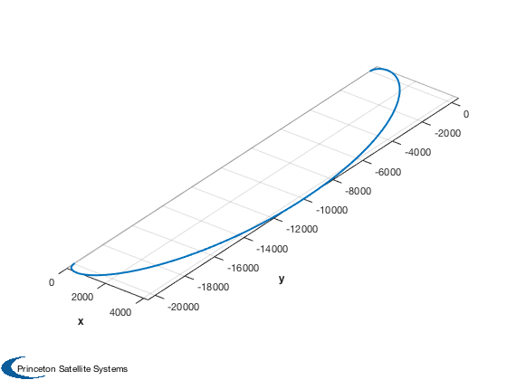
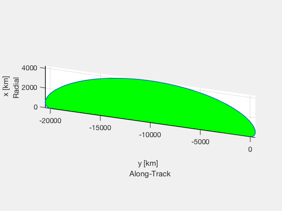
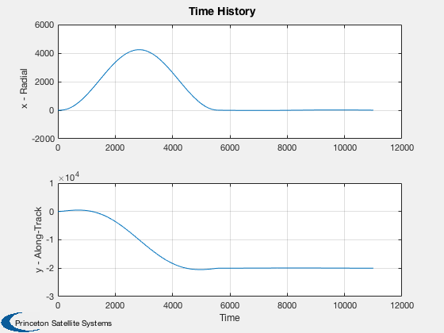

Relative simulation with accelerations to produce an offset in leader-follower frame.
This demo uses DiscreteHills to simulate a phase-change maneuver in the relative frame. Equivalent maneuvers are applied one orbit period apart.
See also OrbMnvrPhaseChange, OrbRate, Period, DiscreteHills, Plot2D, HillsFramePlot, Plot3D
Contents
%-------------------------------------------------------------------------- % Copyright 2017 Princeton Satellite Systems, Inc. % All rights reserved. %-------------------------------------------------------------------------- % Since version 2017.1 %--------------------------------------------------------------------------
Parameters and ideal solution
Mission Parameters
mass = 12; sma = 6740; thrust = 0.1; % N % Predicted phase-change delta-V dSeparation = 20; % km dTheta = dSeparation/sma; dVPhase = OrbMnvrPhaseChange( 6740, dTheta, 1 )*1e3; fprintf('1 rev delta-V: %g m/s\n',dVPhase); % Compute an equivalent burn time for the selected thruster tBurn = dVPhase/2*mass/thrust; fprintf('Thrust: %g N\n',thrust); fprintf('Burn time per maneuver: %g s\n',tBurn);
1 rev delta-V: 2.4201 m/s Thrust: 0.1 N Burn time per maneuver: 145.206 s
Simulate for two orbits
dT = 20; acc = thrust/mass; P = Period(6740); w0 = OrbRate(6740); t = 0:dT:2*P; nBurn = ceil(tBurn/dT); nPts = length(t); f = tBurn/(nBurn*dT); x0 = [0; 0; 0; 0; 0; 0]; aC = zeros(3,length(t)-1); tP = floor(nPts/2); for k = 1:nBurn aC(:,k) = [0;f*acc;0]; aC(:,tP+k) = [0;-f*acc;0]; end xDisc = DiscreteHills( x0, w0, aC, dT );
Plot the resulting trajectory
Plot3D(xDisc(1:3,:)) axis equal HillsFramePlot(xDisc(1:3,:)) Plot2D(t,xDisc(1:2,:),'Time',{'x - Radial','y - Along-Track'},'Time History') %--------------------------------------
ans =
Figure (2) with properties:
Number: 2
Name: ''
Color: [0.94 0.94 0.94]
Position: [0 338 560 420]
Units: 'pixels'
Use GET to show all properties
  